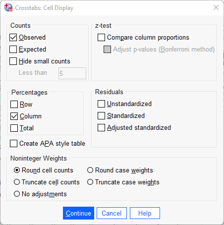

Kapitel 6 Bivariat analys: Att studera samvariationen mellan två variabler
Under denna kurs kommer du vilja undersöka huruvida det finns ett samband mellan två variabler. Hur sambandet undersöks bestäms helt uifrån vilken datanivå era variabler har.
6.1 Samband mellan två kategoriska variabler
Under förutsättning att variablernas skalnivåer är nominal- eller ordinalskala (ej intervall- eller kvotskala) analyseras sambandet vanligtvis genom att studera de båda variablerna i en korstabell (”Crosstab”). Gör följande:
Analyze > Descriptive statistics > Crosstabs

I detta fönster har du likt tidigare en rullista till vänster som innehåller samtliga variabler i datamaterialet. Innan du fortsätter är det viktigt att du, med hänvisning till din frågeställning, har gjort klart vilken variabel som är tänkt att påverka den andra. Beroende variabel placeras i radled (”Row(s)”) och oberoende variabel placeras i kolumnled (”Column(s)”). Vi kan t.ex. vara intresserade av huruvida oro för brottsligheten i samhället skiljer sig åt efter kön. Vi gör då en korstabell med variablerna S4 (Oro brottslighet) Kön. Identifiera variablerna i rullistan till vänster och för sedan över dessa till ”Row(s)” respektive ”Column(s)” genom att använda pilarna. I detta fall gjordes alltså antagandet att Kön är oberoende. Som framgår finns ytterligare funktioner/alternativ. För kursen relevanta rutor är här ”Statistics”, ”Cells” och ”Format”. Under ”Statistics” kan man välja mellan ett flertal olika sambandsmått och signifikanstest. Vi återkommer till sambandsmått och signifikanstest, nu ligger fokus på att konstruera en korstabell som kan möjliggöra tolkningen av om och i så fall hur våra variabler är relaterade till varandra. För att underlätta denna tolkning väljer du först alternativet ”Cells”.
Att sammanställa tabellen endast med antal observationer i varje cell gör en jämförelse svår. Under rubriken ”Percentages” är det är möjligt att markera om korstabellen ska sammanställas med rad- (”Row), kolumn- (”Column”), och/eller totalprocent (”Total”). Radprocent innebär att summera varje rad till 100 procent, medan totalprocent innebär att redovisa hur stor andel varje cell utgör av samtliga observationer. Här har vi valt att markera kolumnprocent, med vilket avses att kolumnerna summeras upp till 100 procent.
När den oberoende variabeln är placerad i kolumnled och den beroende variabeln i radled möjliggör valet av kolumnprocent tolkningen av huruvida det verkar finnas ett samband mellan variablerna – om oro för brottsligheten i samhället skiljer sig åt mellan män och kvinnor. Eftersom vi konsekvent väljer att placera våra variabler på detta sätt kommer vi alltså i syfte att utreda ett eventuellt samband alltid vilja redovisa korstabellen med kolumnprocent. Klicka på ”Continue” när du gjort ditt val. Slutligen ska vi ta en titt på alternativet ”Format”. Här kan du välja om radledet ska redovisas i stigande (”Ascending”) eller fallande (”Descending”) ordning. I syfte att tolka riktningen på sambandet kan valet av stigande eller fallande ordning underlätta, men detta är en smaksak och du kommer oavsett val kunna göra samma tolkning av korstabellen i syfte att utreda ett eventuellt samband. I detta fall har standaralternativet stigande ordning valts, vilket innebär att korstabellen i radled kommer att sammanställas med det lägsta värdet överst. Klicka på ”Continue” när du gjort ditt val.
Klicka därefter ”OK” så producerar SPSS en korstabell över relationen mellan kön och oro för brottsligheten. Resultatet visas i output fönstret. Så som vi har valt att sammanställa vår korstabell (oberoende variabel i kolumnled och beroende variabel i radled och sammanställd med kolumnprocent) är det nu möjligt att se om om det verkar finnas ett samband mellan kön och oro för brottsligheten i samhället. Nästa steg är att tolka korstabellen. Tekniken är att jämföra kategorierna i den oberoende variabeln radvis.
I korstabellen kan vi se att 31 procent av männen jämfört med 17,5 procent av kvinnorna svarat att de inte alls är oroliga. Det verkar alltså som att det finns ett samband i den meningen att kvinnor är mer oroliga för brottsligheten än män.

Eftersom vi har en variabel på ordinal nivå (oro) och en på nominal nivå (kön), kan vi inte uttala oss om riktningen på sambandet, dvs. om det rör sig om ett positivt eller negativt samband (hur vi kodat variabeln kön, dvs. vilket kön som kodats som 1 eller 2, är ju godtyckligt).
6.2 Samband mellan två numeriska variabler
När vi har att göra med variabler som befinner sig på intervall- eller kvotskala är varken korstabell eller ovan nämnda sambandsmått lämpliga verktyg för att utreda ett eventuellt samband. Föreställ dig till exempel att undersöka sambandet mellan ålder och brott i en korstabell, där respondenten i enkätundersökningen har fått ange sin ålder och även självskatta antalet begångna brott under det senaste året – det skulle resultera i en enorm korstabell eftersom varje specifik ålder- och brottkombination kräver sin egen cell.
I detta fall är istället ett spridningsdiagram (”Scatter plot”) lämpligt att använda för att studera huruvida ett samband verkar föreligga. Gör följande:
Graphs > Chart builder
Under ”Gallery”, klicka på ”Choose from”, välj ”Scatter / Dot” och dra ”Simple Scatter” upp till rutan ”Chart Preview”. Dra din oberoende variabel till rutan för x-axeln och din beroende variabel till rutan för y-axeln. Klicka därefter ”OK”.
Vi kan även använda sambandsmått för att beräkna styrka och riktning på sambandet. När vi har att göra med två kontinuerliga variabler är sambandsmåttet Pearson’s r (korrelationskoefficienten r) lämpligt att använda. Gör följande:
Analyze > Correlate > Bivariate
För över de variabler du vill korrelera till rutan ”Variables” och markera Pearson’s r. Klicka därefter ”OK”. Precis som tidigare nämnda sambandsmått varierar Pearson’s r på en skala mellan -1 och +1, där 0 indikerar att det inte finns ett samband medan -1 anger ett perfekt negativt samband och +1 anger ett perfekt positivt samband.
6.2.1 Videoinstruktioner
Ett alternativ till att studera relationen mellan ålder och brott på ovanstående vis är att klassindela de båda kontinuerliga variablerna till kategoriska variabler med hjälp av recode-kommandot (se under Databearbetning). Man kan tänka sig att klassindela ålder till de tre klasserna ”ungdom”, ”ung vuxen” samt ”vuxen”, samt brott till de tre klasserna ”inga brott”, ”1-2 brott”, ”3 eller fler brott”. På det sättet skulle vi konstruera två variabler på ordinal skalnivå utav de två ursprungliga variablerna på kvotskala. Därmed kan vi med de nya variablerna studera relationen mellan ålder och brott i en korstabell (i detta fall med nio celler) och med de sambandsmått som är lämpliga för variabler på ordinal skalnivå. Tänk på att variabler på högre skalnivå alltid kan transformeras till variabler på lägre skalnivå.
6.3 Sambandsmått

I ovanstående exempel kunde vi, genom att tolka korstabellen, se att ett samband verkar föreligga mellan kön och oro för brottslighet. Ibland vill man även uttala sig om sambandets styrka och i detta syfte är användningen av sambandsmått bra. I de fall som sambandets riktning är tolkningsbart ger sambandsmåttet även denna information. Statistiker har tagit fram olika sambandsmått som gäller för variabler som befinner sig på olika skalnivåer. För att välja sambandsmått börja med följande:
Analyze > Descriptive statistics > Crosstabs
Placera din oberoende variabel i kolumnled och din beroende variabel i radled. Välj även, precis som tidigare, att sammanställa korstabellen med kolumnprocent under alternativet ”Cells”. Klicka därefter på ”Statistics”. Här får vi en viss vägledning av SPSS när det gäller vilka sambandsmått som är lämpliga att använda för våra variabler beroende på datanivå.Överkurs: Vi kommer i denna kurs inte gå på djupet med de sambandsmått som finns och hur man ska tolka resultaten från de. Vill ni dock ha fördjup. Om ni dock önskar att läsa er in på vilka sambandsmått som finns, när ni ska använda de och vilka sambandsmått som passar till vilken typ av variabler rekommenderar vi följande artikel.